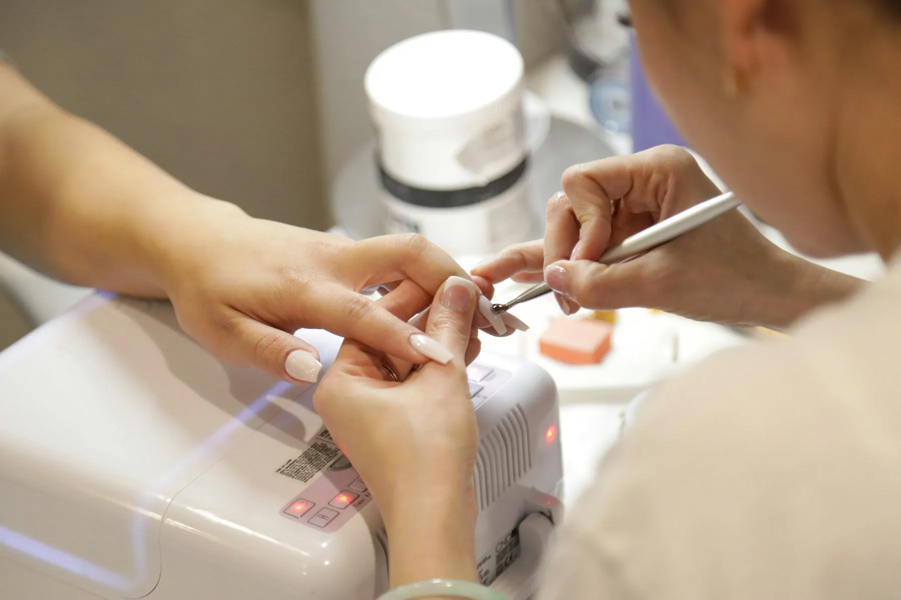
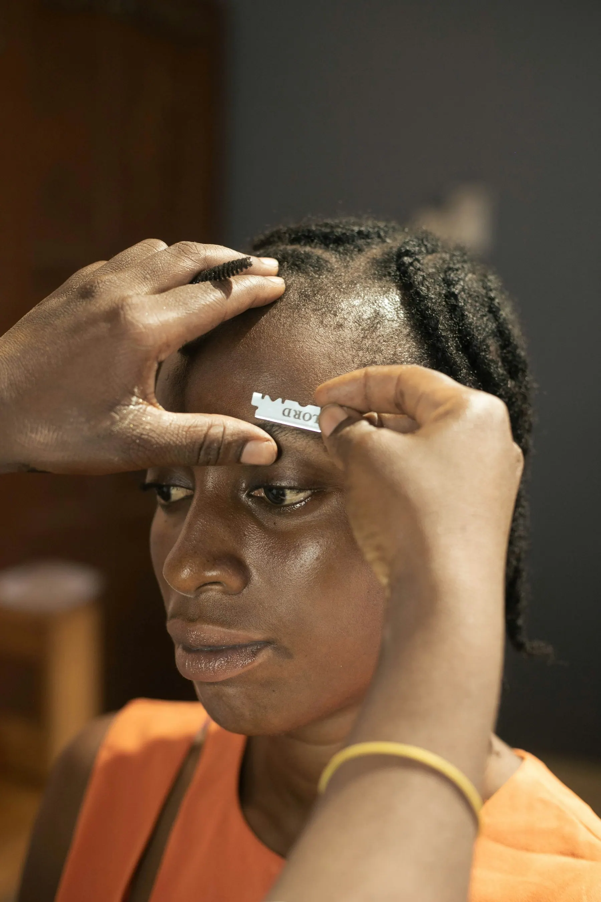
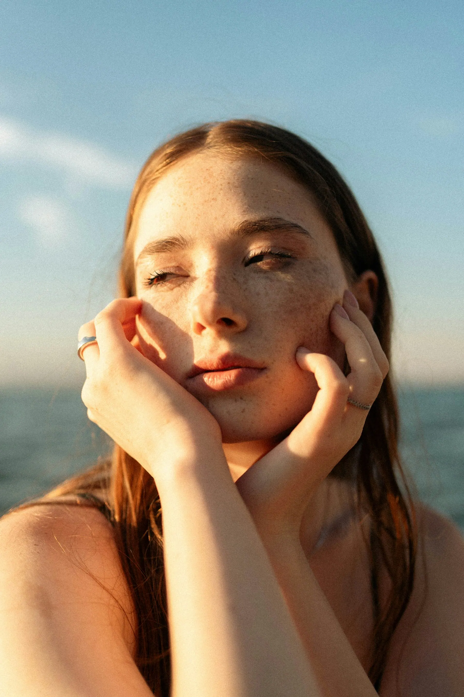

Студия
красоты Лён
Маникюр, брови и уход за кожей в центре Казани. Без спешки, на чистых инструментах, у мастеров с именем.
Выбрать услугиПроведите — проявится цвет
Три направления и одна забота
Наведите на фото — оживёт и оно.

НогтиМаникюр, покрытие, дизайн
БровиФорма, окрашивание, ламинирование
КожаЧистка, массаж, уход
Соберите свой визит
Отметьте услуги — сайт сам посчитает время и цену и покажет свободные окна.
Мастер
Завтра, время
Ваш визит
Итого0 ₽
Отметьте услугу и время
Вы записаны. Мастер напишет вам накануне. Это пример: запись никуда не ушла.
АдресКазань, ул. Баумана, 44 · второй этаж
ЧасыКаждый день 9:00 — 21:00
Связь+7 900 000-00-00 · WhatsApp